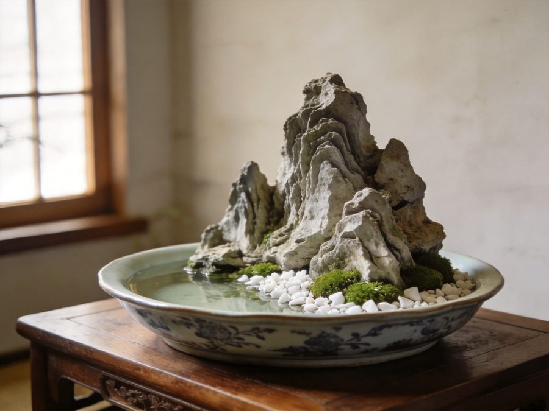
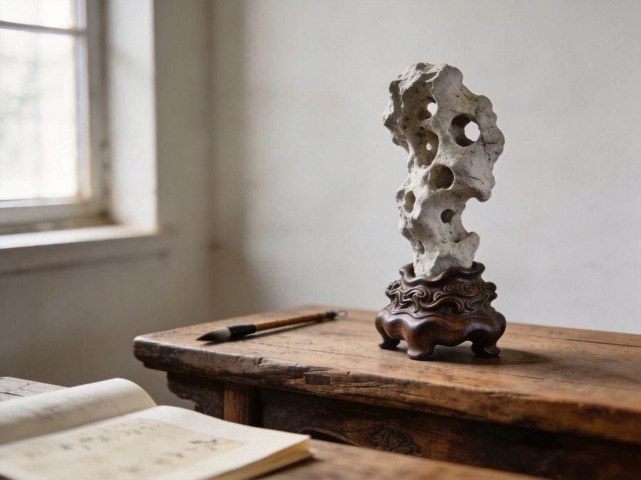
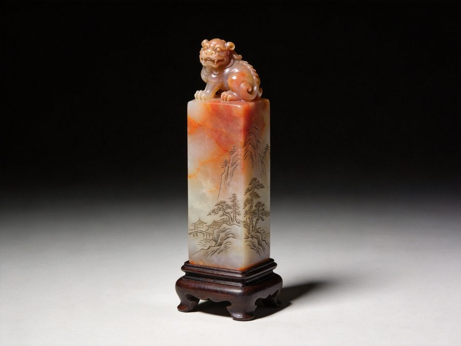
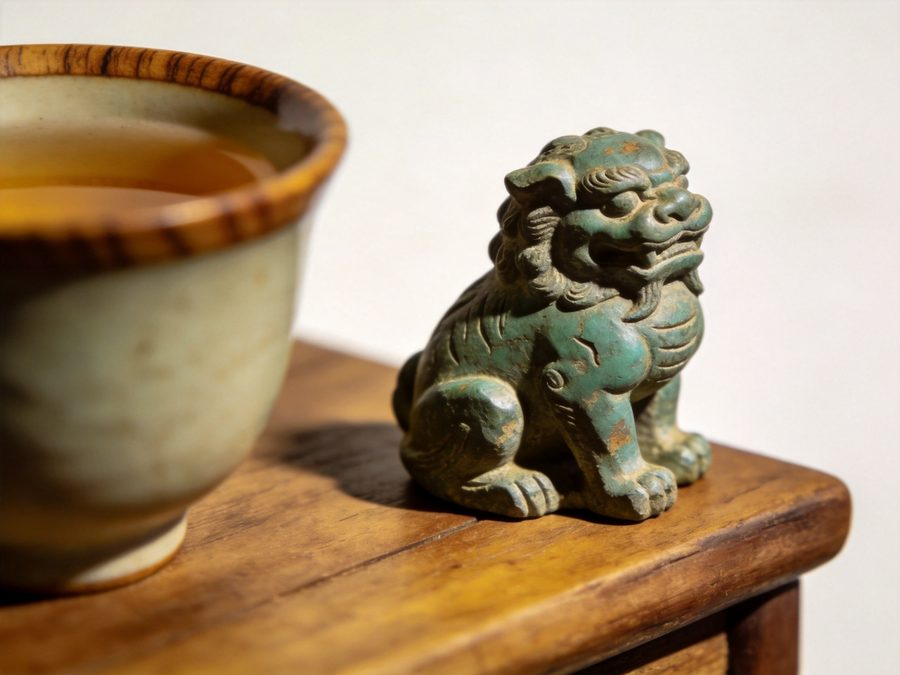
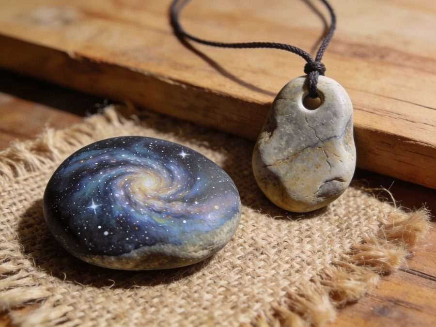

从一块河滩上的普通石头，到一盆山水、一方印章、一件可以传家的手作。
这里是石刻手作的入门站：认识石头、选对工具、走完第一件作品。
质地松软（摩氏 1-1.5），凿子、小镐就能塑形，能吸水长苔，是山水盆景的当家石料。山东、河北、河南产地毛料论斤卖，成本极低。
硬度低，指甲可划痕，手推刨不崩裂。适合练刀、刻印、做小件。缺点是软容易磕碰，成品适合摆不宜佩戴。
河滩鹅卵石多属此类（摩氏 3 左右）。够硬能出手感，又不至于崩刀。彩绘石头画、刻字、案头小件首选，成本几乎为零。
传统印石，质地细腻有冻感，走刀爽脆不粘刀。适合学篆刻、做纽雕。价格跨度大，练习选普通老岭青田即可。
"瘦皱漏透"的文人赏石传统，讲究天然形态而非雕刻。小规格原石便宜，配上木座就是桌案摆件；懂"相石"比会刻刀更重要。
摩氏 6 以上，手刀基本无解，必须上电磨+金刚砂磨头，噪声粉尘大。有基础后再碰，成品价值也最高。
| 工具 | 用途 | 参考价带 |
|---|---|---|
| 电动刻字笔 | 第一件工具：刻字、签名、简单线条，振幅小易控 | ¥27 - 96 |
| 电磨机套装 | 核心设备：打磨/雕刻/抛光全靠它，选带调速的 | ¥18 - 206（艾锐盾/德力西/美耐特/思耐捷等） |
| 金刚砂磨头套装 | 耗品：F/D/C2/A/T形/球形/柱形各配，柄径 2.35mm / 3mm | ¥0.2 - 15 / 支 |
| 石工凿 + 小镐 | 山水盆景塑形主力：钢凿开沟壑、小镐敲剥大形，吸水石专用 | ¥3.8 - 30 / 件 |
| 篆刻刀套装 | 走刀刻印、修边，软质石材的精准武器 | ¥3 - 14（入门碳钢） |
| 金刚石锉刀 | 去大棱、修整外形，比磨头快且不扬尘 | ¥5 - 20 |
| 砂纸 / 抛光 | 目数进阶：60-120（塑形）→150-220（修面）→400（细磨）→800-1500（抛光） | ¥10 - 30 / 套 |
| 护具三件套 | 护目镜 + 防尘口罩（KN95 级）+ 防割手套 | ¥20 - 40 |
电动刻字笔 + 砂纸几张 + 河滩鹅卵石。一个下午就能刻出第一块名字石，适合先确认兴趣。
调速电磨机 + 金刚砂磨头全套 + 石工凿镐 + 浅盆一只 + 吸水石毛料。能做打磨摆件、石头画、桌面山水。
进阶电磨 + 全尺寸磨头 + 篆刻刀套装 + 金刚石锉刀 + 印石练习料 + 成套盆器配件。可以开始做印章、纽雕和完整山水盆景。
吸水石小景 + 浅盆白砂青苔，几十元材料出一盆。禅意微景观是电商爆款赛道，同类陶瓷摆件单款成交上万件，适合走量起号。
青花瓷盆/紫砂盆 + 主峰群峦 + 亭塔船人物配件。盆器 9.5-216 元分档，配件 1.4-30 元一件。一盆一景一故事，定价 150-600 元。
循环水泵 + 大型吸水石，室内流水摆件。成品电商卖 666 元起，茶室、办公室、开业礼场景刚需，是利润最厚的档位。
| 物料 | 说明 | 参考价带（2026-10 检索） |
|---|---|---|
| 吸水石毛料 | 产地山东/河北/河南，论斤批发；选孔洞自然、层理分明的 | 批发约 ¥0.03/斤起，零售 ¥3-10/斤 |
| 盆器 | 树脂盆入门（¥12-159）、青花/紫砂瓷盆进阶（¥9.5-216）、汉白玉/大理石盆高配（¥216-1123） | ¥9.5 - 216 主流 |
| 配件摆件 | 陶瓷小船（单品成交 7 万+）、铅制亭塔（¥1.68-10.7）、人物渔翁（¥1.39-28）、凉亭廊桥（¥9.5-29） | ¥1.4 - 30 / 件 |
| 造景辅材 | 白砂石子、苔藓、文竹/菖蒲小苗、云石胶或水泥（粘峰峦） | ¥5 - 30 / 套 |
| 水泵（流水款） | 小型潜水泵 + 滴水盘，注意噪音参数 | ¥6.8 - 61 |
养护：吸水石每天给石顶浇水，苔藓自然生长越养越绿——"会活的盆景"正是它比干摆件好卖的原因。





图片为 AI 生成的参考效果图（选品方向与构图参考真实市售作品），正式运营替换为实拍图：文件位 img/stones/（penjing / taihu / seal / lion / stoneart.jpg），同名覆盖即可，无需改代码。价格为主流电商平台公开区间（2026-10 检索）。
对光检查裂纹走向，敲击听声（清脆=实心，沉闷=有暗裂）。新手选吸水石、皂石、鹅卵石起步。
用记号笔直接在石头上画稿，随形就势：俏色利用、避裂设纹。拍照留存设计稿。
电磨机装粗磨头（F/T 形）或石工凿去掉大块余料，确定大轮廓。心诀：宁多留三分，不多去一成。
换小号磨头细化轮廓与层次，边磨边水冷降温，避免石材干烧发白开裂。
球形/柱形磨头开脸、刻纹；软料可换篆刻刀走刀，细节的密度决定成品档次。
砂纸目数阶梯走：120 → 220 → 400 → 800 → 1500，每级磨掉上一级划痕再升级，最后羊毛轮上膏抛光。
擦净后上石蜡或矿物油养色，防裂增润；印章底面蘸印泥试印检查平整度。
强光下全面检查裂纹与崩口，小瑕用同色石粉+胶修补，大瑕重新设计俏色化掉。
完成它，你就走完了"选料—设计—雕刻—打磨—养护"的完整闭环，后面每一件都只是把这个循环做深。